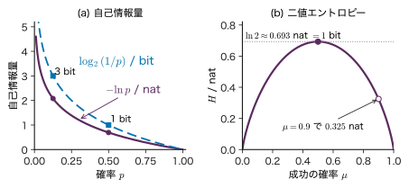
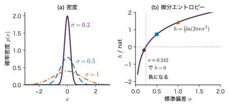
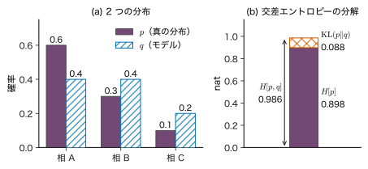
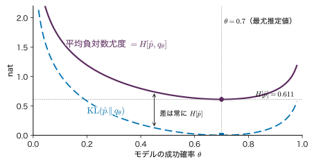
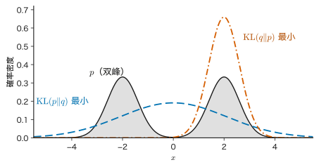
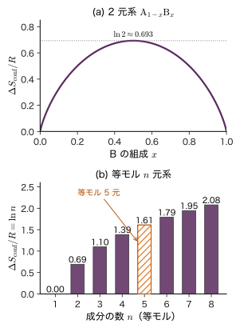

第5章情報量・エントロピー・KL ダイバージェンス — 分布の違いを測る
- XRD のパターンから結晶相を当てる分類器を学習させるとき，損失関数に二乗誤差ではなく「正解の相に付けた確率の対数にマイナスを付けたもの」（交差エントロピー）を使うのはなぜか．
- モデルの予測分布が真の分布からどれだけずれているかを 1 つの数で表せるか．その数は 2 つの分布の「距離」と呼んでよいか．
- 機械学習の「エントロピー」と，統計力学のエントロピー（高エントロピー合金の「エントロピー」）は同じものか．
粉末試料の XRD を測る前に，候補の結晶相が 8 つあり，どれも同じくらいありそうだとしよう．「相 1〜4 のどれかか」「相 1〜2 のどれかか」「相 1 か」のように，はい・いいえで答えられる質問を 3 回すれば，どの相かが必ず分かる（$2^{3}=8$）．逆に，最初から「ほぼ確実に相 1 だ」と分かっていれば，測定で得るものはほとんど無い．結果を知ったときの「驚き」の大きさは，その結果の確率が小さいほど大きい．この驚きの量を情報量と呼び，その平均をエントロピーと呼ぶ．
本章では，自己情報量 $-\ln p(x)$ がなぜ対数の形になるのかから始め，エントロピー $H[p]$，連続変数の微分エントロピー，2 つの分布の違いを測る交差エントロピーと KL ダイバージェンス（Kullback–Leibler divergence．分布のずれの大きさ）を定義する．そのうえで，「データの分布とモデルの分布の KL ダイバージェンスを最小にすること」が，第4章の最尤推定と同じであることを示す．これが分類の交差エントロピー損失（第9章）と GPT の次トークン予測の損失（第26章）の正体である．後半では，KL の向きによる近似の違い，変数の間の依存の強さを測る相互情報量，統計力学の Gibbs のエントロピーとの対応と相違，合金の配置エントロピーを扱う．
- 「独立な事象の情報量は足し算」という要請から自己情報量 $-\ln p$ を導き，nat と bit を換算できる．
- 離散分布のエントロピーを手で計算し，一様分布で最大になることを証明できる．
- Gauss 分布の微分エントロピー $\tfrac12\ln(2\pi e\sigma^{2})$ を導き，それが負にもなり，単位の取り方で値が変わることを説明できる．
- $H[p,q]=H[p]+\KL(p\,\|\,q)$ と $\KL(p\,\|\,q)\ge0$ を 1 行ずつ導き，KL が非対称であることを数値で示せる．
- 経験分布との KL の最小化が最尤推定と同じであることを導き，分類の交差エントロピー損失をこの立場から説明できる．
- 相互情報量を同時分布の表から計算し，独立なら 0 になることを示せる．
- エネルギーの平均を固定してエントロピーを最大にするとカノニカル分布が出ることを導き，Shannon のエントロピーと熱力学のエントロピーの違いを述べられる．
- 理想混合の配置エントロピー $-R\sum_i x_i\ln x_i$ を状態数から導き，等モル 5 元系で $R\ln 5$ になることを計算できる．
入門ルートで読む節：5.1，5.2，5.4，5.5，5.11．「詳しいルート」の印が付いた節は，初めて読むときは飛ばしてよい．
5.1 自己情報量 — 驚きの大きさを測る
5.1.1 何をしたいのか
候補の相が 4 つ（A，B，C，D）あり，これまでの合成の経験から，それぞれの確率が $1/2$，$1/4$，$1/8$，$1/8$ だとする．測定の結果を，はい・いいえで答える質問で当てていくことにしよう．最もありそうな A から順に「A か？」「B か？」「C か？」と聞くと，A なら 1 問，B なら 2 問，C か D なら 3 問で分かる（図5.1）．
この数を確率と並べると，A（確率 $1/2=2^{-1}$）は 1 問，B（$1/4=2^{-2}$）は 2 問，C と D（$1/8=2^{-3}$）は 3 問であり，どの場合も
$$ \text{必要な質問の数}=\log_{2}\frac{1}{p} $$になっている．確率の小さい結果ほど，知ったときに多くの質問を省いてくれる．言い換えれば，確率の小さい結果ほど「驚き」が大きく，多くの情報をもたらす．この量を一般の確率についても定義したい．
5.1.2 対数の形はどこから来るか
確率 $p$ の事象が起きたと知ったときの「情報量」$h$ に，次の 3 つの性質を要請する．
- $h$ は確率 $p$（$0\lt p\le1$）だけで決まる関数 $h(p)$ であり，$p$ が小さいほど大きい（単調減少）．
- 必ず起きる事象（$p=1$）を知っても情報は無い：$h(1)=0$．
- 独立な 2 つの事象の情報量は足し算：確率 $p$ の事象と確率 $q$ の事象が独立なら，両方が起きる確率は $pq$ であり（第2章 2.3），$h(pq)=h(p)+h(q)$．
3 つ目は，2 つの独立な試料の相をそれぞれ知ったときの情報が，それぞれの情報の和になってほしい，という自然な要求である．この 3 つから $h$ の形が対数に決まる．
導出：要請を満たす関数は $-c\ln p$ に限る
$p=e^{-u}$（$u=-\ln p\ge0$）と変数を替え，$g(u)\equiv h(e^{-u})$ とおく．$p$ が小さくなるほど $u$ は大きくなるので，要請 1 から $g$ は単調増加，要請 2 から $g(0)=h(1)=0$ である．要請 3 は，$p=e^{-u}$，$q=e^{-v}$ とおくと $pq=e^{-(u+v)}$ なので
$$ g(u+v)=g(u)+g(v)\qquad(u,v\ge0). $$(i) 整数倍：$v=u$ とおくと $g(2u)=2g(u)$．これを繰り返すと，正の整数 $n$ について $g(nu)=n\,g(u)$．
(ii) 有理数倍：正の整数 $m$ について，$u=m\cdot(u/m)$ と見て (i) を使うと $g(u)=m\,g(u/m)$，すなわち $g(u/m)=g(u)/m$．これと (i) を合わせて，正の有理数 $r=n/m$ について $g(ru)=r\,g(u)$．
(iii) 実数へ：$c\equiv g(1)$ とおくと，(ii) から正の有理数 $r$ について $g(r)=cr$．任意の実数 $u\gt0$ に対し，$u$ に左右から近づく有理数 $r_1\lt u\lt r_2$ をとると，$g$ が単調増加なので $cr_1=g(r_1)\le g(u)\le g(r_2)=cr_2$．$r_1,r_2\to u$ とすれば $g(u)=cu$．
以上から $g(u)=cu$，元の変数に戻すと $h(p)=g(-\ln p)=-c\ln p$ である．$g$ が増加関数なので $c\gt0$．
（導出終わり）
定数 $c$ は対数の底の選び方（＝情報の単位）に当たる．$c=1$ とすれば自然対数，$c=1/\ln 2$ とすれば $-\ln p/\ln 2=-\log_{2}p$ である．
定義5.1 自己情報量
確率質量関数 $p(x)$ に従う離散的な確率変数が値 $x$ をとったときの自己情報量（self-information）を
\begin{equation} h(x)=-\ln p(x)=\ln\frac{1}{p(x)} \label{eq:5-selfinfo} \end{equation}と定める．自然対数で測った単位を nat（ナット），$-\log_{2}p(x)$ で測った単位を bit（ビット）という．$\log_{2}p=\ln p/\ln 2$ なので，
$$ \begin{aligned} 1\ \mathrm{bit}&=\ln 2\ \mathrm{nat}\approx0.693\ \mathrm{nat},\\ 1\ \mathrm{nat}&=\frac{1}{\ln 2}\ \mathrm{bit}\approx1.443\ \mathrm{bit}. \end{aligned} $$本書は自然対数（nat）を既定とする．微分が簡単で，最尤推定の対数尤度 $\ln p(\data\mid\theta)$（第4章 4.2）とそのまま結び付くからである．bit を使うのは「はい・いいえの質問の数」や記憶容量のように 2 進法が自然な話のときだけにする．図5.2(a) に $h=-\ln p$ と $\log_{2}(1/p)$ を描いた．$p\to0$ で情報量は限りなく大きくなり，$p=1$ で 0 になる．
例題5.1 相を知ったときの情報量
(1) 候補の相が 8 つあり，どれも確率 $1/8$ とする．測定で相が分かったときの自己情報量を nat と bit で求めよ．(2) 確率 $1/2$ の相 A と，確率 $1/32$ の希な相のそれぞれについて，自己情報量を求めよ．(3) 互いに独立な 2 つの試料（それぞれ 8 つの候補が等確率）の相を両方知ったときの自己情報量を，(1) の結果を使って求め，直接計算した値と比べよ．
解答 (1) 式 \eqref{eq:5-selfinfo} より $h$ $=-\ln(1/8)$ $=\ln 8$ $=3\ln 2$ $\approx2.079\ \mathrm{nat}$．bit では $\log_{2}8=3\ \mathrm{bit}$．はい・いいえの質問 3 回分である．
(2) 相 A は $\ln 2$ $\approx0.693\ \mathrm{nat}$ $=1\ \mathrm{bit}$．希な相は $\ln 32$ $=5\ln2$ $\approx3.466\ \mathrm{nat}$ $=5\ \mathrm{bit}$．確率が $1/16$ 倍になると，情報量は $\ln 16=4\ \mathrm{bit}$ だけ増える．
(3) 独立なので 2 つの相の組の確率は $(1/8)\times(1/8)=1/64$．直接計算すると $-\ln(1/64)$ $=\ln 64$ $=6\ln2$ $\approx4.159\ \mathrm{nat}$ $=6\ \mathrm{bit}$．一方，(1) の値の和は $2\times3=6\ \mathrm{bit}$ で一致する．これは要請 3 そのものである．
5.2 エントロピー — 驚きの平均
5.2.1 定義
測定の前には，どの結果が出るかは分からない．そこで，測定によって得られる情報量を平均で見積もる．自己情報量 $h(x)$ の期待値（第2章 2.5）をとったものがエントロピーである．
定義5.2 エントロピー
離散的な確率変数 $x$ が $K$ 個の値をとり，その確率質量関数が $p(x)$ のとき，
\begin{equation} \begin{aligned} H[p]&=\Ex_{p}\bigl[-\ln p(x)\bigr]\\ &=-\sum_{x}p(x)\ln p(x) \end{aligned} \label{eq:5-entropy} \end{equation}を分布 $p$ のエントロピー（entropy）という．単位は nat（$\log_{2}$ を使えば bit）である．確率変数の名前を強調するときは $H[x]$ とも書く．$p(x)=0$ となる値の項は，次の約束で 0 とする．
$$ 0\ln 0\equiv0 . $$約束 $0\ln0=0$ は極限から来ている．$t\ln t$ の $t\to+0$ の極限は「$0\times(-\infty)$」の不定形なので，$t\ln t=\dfrac{\ln t}{1/t}$ と書き直して l'Hôpital の定理を使う：
$$ \lim_{t\to+0}\frac{\ln t}{1/t}=\lim_{t\to+0}\frac{1/t}{-1/t^{2}}=\lim_{t\to+0}(-t)=0 . $$起こりえない値は，平均の驚きに寄与しない．
5.2.2 性質
- 非負：$0\le p(x)\le1$ なので $\ln p(x)\le0$，各項 $-p(x)\ln p(x)\ge0$．よって $H[p]\ge0$．
- 0 になるのは結果が確定しているときだけ：$H[p]=0$ なら全項が 0 なので，各 $x$ で $p(x)=0$ か $p(x)=1$．確率の和が 1 なので，ある 1 つの値の確率が 1 で他は 0 である．
- 最大は一様分布：$K$ 個の値をとる分布では $H[p]\le\ln K$ で，等号は $p(x)=1/K$（一様分布）のときに限る．一様分布の値 $H=-\sum_{x}\frac1K\ln\frac1K=\ln K$ は直接計算できる．これが最大であることの証明は，5.4 節で KL ダイバージェンスを使って 2 行で行う（5.4 節の定理5.2）．
最も簡単な例は，2 つの値をとる Bernoulli（ベルヌーイ）分布 $p(x=1)=\mu$，$p(x=0)=1-\mu$ である．そのエントロピーを 二値エントロピー関数という．
\begin{equation} \begin{aligned} H(\mu)&=-\mu\ln\mu\\ &\quad-(1-\mu)\ln(1-\mu) \end{aligned} \label{eq:5-binary} \end{equation}ここで $0\le\mu\le1$ である．最大の位置を微分で確かめる．$\diff{}{\mu}(\mu\ln\mu)=\ln\mu+1$ を使うと
$$ \begin{aligned} \diff{H}{\mu}&=-(\ln\mu+1)+\bigl(\ln(1-\mu)+1\bigr)\\ &=\ln\frac{1-\mu}{\mu},\\ \frac{\dd^{2}H}{\dd\mu^{2}}&=-\frac{1}{\mu}-\frac{1}{1-\mu}=-\frac{1}{\mu(1-\mu)}\lt0 . \end{aligned} $$1 階微分が 0 になるのは $(1-\mu)/\mu=1$，すなわち $\mu=1/2$ のときで，2 階微分が負なので最大である．最大値は $H(1/2)$ $=\ln2$ $\approx0.693\ \mathrm{nat}$ $=1\ \mathrm{bit}$（図5.2(b)）．成功率 0.9 の工程では $H(0.9)\approx0.325\ \mathrm{nat}$ しかなく，結果は見る前からおおむね分かっている．

5.2.3 エントロピーの読み方 — 平均の質問数と「実効的な選択肢の数」
図5.1の例では，平均の質問数が 1.75 問だった．これはエントロピーを bit で測った値に一致する（例題5.2）．一般に，結果を 1 回ずつはい・いいえの質問（あるいは 0 と 1 の符号）で伝えるとき，最良の方法の平均の長さは，bit で測ったエントロピー以上であり，エントロピーに 1 bit を足した値より短くできることが知られている（Shannon の情報源符号化定理．本書では結果だけを述べ，証明は参考文献の Cover & Thomas の教科書に譲る）．エントロピーは「結果を知るまでに平均でどれだけ迷っているか」の量である．
もう 1 つの読み方として，$\exp(H[p])$ を考える．$K$ 個の一様分布では $\exp(\ln K)=K$ なので，$\exp(H)$ は「同じエントロピーを持つ一様分布なら，選択肢が何個あるか」を表す．これを実効的な選択肢の数と呼ぶことにする．言語モデルの評価で使う perplexity（第26章 26.4）は，この考え方を「モデルが次のトークンについて平均で何個の選択肢に迷っているか」に使ったものである．
5.2.4 独立な変数のエントロピーは足し算
2 つの離散的な確率変数 $x,y$ の同時分布 $p(x,y)$ のエントロピーを同時エントロピー $H[x,y]=-\sum_{x}\sum_{y}p(x,y)\ln p(x,y)$ という．$x$ と $y$ が独立なら $p(x,y)=p(x)p(y)$ なので，
$$ \begin{aligned} H[x,y]&=-\sum_{x}\sum_{y}p(x)p(y)\\ &\qquad\times\bigl\{\ln p(x)+\ln p(y)\bigr\}\\ &=-\sum_{x}p(x)\ln p(x)\underbrace{\sum_{y}p(y)}_{=1}\\ &\quad-\sum_{y}p(y)\ln p(y)\underbrace{\sum_{x}p(x)}_{=1}\\ &=H[x]+H[y]. \end{aligned} $$自己情報量の要請 3（独立なら足し算）が，平均をとっても保たれている．独立でないときに何が変わるかは 5.7 節で扱う．
例題5.2 4 つの相のエントロピー
図5.1の分布 $p=(1/2,\,1/4,\,1/8,\,1/8)$ について，(1) エントロピーを bit と nat で求め，平均の質問数と比べよ．(2) 4 つの相が等確率の場合のエントロピーと比べよ．(3) 実効的な選択肢の数 $\exp(H)$ を求めよ．
解答 (1) bit で計算すると，$-\log_{2}(1/2)=1$，$-\log_{2}(1/4)=2$，$-\log_{2}(1/8)=3$ なので
$$ \begin{aligned} H&=\tfrac12\cdot1+\tfrac14\cdot2+\tfrac18\cdot3+\tfrac18\cdot3\\ &=0.5+0.5+0.375+0.375=1.75\ \mathrm{bit}. \end{aligned} $$nat に直すと $1.75\times\ln2$ $\approx1.75\times0.6931$ $\approx1.213\ \mathrm{nat}$．平均の質問数 1.75 問と一致する．
(2) 等確率なら $H$ $=\log_{2}4$ $=2\ \mathrm{bit}$ $=\ln4$ $\approx1.386\ \mathrm{nat}$．偏りのある分布の方が 0.25 bit 小さい．事前に「A らしい」と分かっている分だけ，測定で得る情報が少ない．
(3) $\exp(1.213)\approx3.36$．4 つの候補があっても，偏りのために実効的には 3.4 個ほどの選択肢に迷っているのと同じである．
5.3 連続変数の微分エントロピー詳しいルート
5.3.1 定義と Gauss 分布の値
連続的な確率変数では，和を積分に置き換えて同じ形の量を定義する．
定義5.3 微分エントロピー
確率密度関数 $p(x)$ を持つ連続的な確率変数 $x$ について
\begin{equation} h[p]=-\int p(x)\ln p(x)\,\dd x \label{eq:5-diffent} \end{equation}を微分エントロピー（differential entropy）という．積分は $p(x)\gt0$ の範囲でとる．
Gauss 分布 $p(x)=\Normal(x\mid\mu,\sigma^{2})=\dfrac{1}{\sqrt{2\pi\sigma^{2}}}\exp\!\left(-\dfrac{(x-\mu)^{2}}{2\sigma^{2}}\right)$（第3章 3.5）の微分エントロピーを計算する．まず対数をとると
$$ \ln p(x)=-\frac12\ln(2\pi\sigma^{2})-\frac{(x-\mu)^{2}}{2\sigma^{2}} . $$式 \eqref{eq:5-diffent} は $-\ln p(x)$ の期待値なので，期待値の線形性と $\Ex[(x-\mu)^{2}]=\sigma^{2}$（分散の定義）を使って
$$ \begin{aligned} h[p]&=\Ex\!\left[\frac12\ln(2\pi\sigma^{2})+\frac{(x-\mu)^{2}}{2\sigma^{2}}\right]\\ &=\frac12\ln(2\pi\sigma^{2})+\frac{\sigma^{2}}{2\sigma^{2}}=\frac12\ln(2\pi\sigma^{2})+\frac12 . \end{aligned} $$$\tfrac12=\tfrac12\ln e$ とまとめると，次の結果を得る．
\begin{equation} h\bigl[\Normal(\mu,\sigma^{2})\bigr]=\frac12\ln\bigl(2\pi e\,\sigma^{2}\bigr) \label{eq:5-gauss-ent} \end{equation}平均 $\mu$ によらず，広がり $\sigma$ だけで決まる．もう 1 つの簡単な例として，区間 $[a,b]$ の一様分布では $p(x)=1/(b-a)$ なので $h$ $=-\int_{a}^{b}\frac{1}{b-a}\ln\frac{1}{b-a}\,\dd x$ $=\ln(b-a)$ である．
5.3.2 負になりうる・目盛りで値が変わる
式 \eqref{eq:5-gauss-ent} は $2\pi e\sigma^{2}\lt1$，すなわち $\sigma\lt1/\sqrt{2\pi e}\approx0.242$ のとき負になる（図5.3）．一様分布でも幅 $b-a\lt1$ なら $\ln(b-a)\lt0$ である．離散のエントロピーは必ず 0 以上だったが，微分エントロピーは負にもなる．密度は 1 を超えうる（第2章 2.1）ので，$-\ln p(x)$ が負になる所があるからである．
さらに，変数の目盛り（単位）を変えると値が変わる．$y=cx$（$c\ne0$ は定数．たとえば μm から nm へなら $c=1000$）とすると，変数変換の公式（第2章 2.6）から $p_y(y)=p_x(y/c)/\abs{c}$ である．これを代入し，$\dd y=\abs{c}\,\dd x$ で積分の変数を $x$ に戻すと
$$ \begin{aligned} h[p_y]&=-\int p_y(y)\ln p_y(y)\,\dd y\\ &=-\int\frac{p_x(x)}{\abs{c}}\Bigl\{\ln p_x(x)-\ln\abs{c}\Bigr\}\abs{c}\,\dd x\\ &=h[p_x]+\ln\abs{c}\int p_x(x)\,\dd x\\ &=h[p_x]+\ln\abs{c}. \end{aligned} $$つまり微分エントロピーの値そのものは，変数をどの単位で測ったかに依存する．値の大小を比べられるのは，同じ変数・同じ単位どうしのときだけである．後で見る KL ダイバージェンスと相互情報量は 2 つの密度の比だけで決まるので，このような単位への依存は無い（5.4 節）．

5.3.3 離散のエントロピーとの関係
連続変数を幅 $\Delta$ の区間に区切って離散化すると，区間 $i$ に入る確率は $P_i\approx p(x_i)\Delta$ である．その離散のエントロピーは
$$ \begin{aligned} H_{\Delta}&=-\sum_{i}P_i\ln P_i\\ &\approx-\sum_{i}p(x_i)\Delta\bigl\{\ln p(x_i)+\ln\Delta\bigr\}\\ &\approx-\int p(x)\ln p(x)\,\dd x-\ln\Delta\underbrace{\int p(x)\,\dd x}_{=1}\\ &=h[p]-\ln\Delta \end{aligned} $$となる（和を積分で近似した）．$\Delta\to0$ で $-\ln\Delta\to+\infty$ なので，離散のエントロピーは発散し，微分エントロピーはその極限ではない．微分エントロピーは，発散する部分 $-\ln\Delta$ を差し引いた残りである．たとえば標準 Gauss 分布（$h\approx1.419$）を幅 $0.1$ で区切ると $H_{\Delta}$ $\approx1.419+2.303$ $=3.722\ \mathrm{nat}$，幅 $0.01$ では $6.024\ \mathrm{nat}$ になる．連続の値を「細かく測れば測るほど」その値を伝えるのに要る情報は増える，という当たり前のことを表している．
例題5.3 粒径の分布の微分エントロピーと単位
焼結体の粒径が平均 $1.5\ \mu\mathrm{m}$，標準偏差 $0.2\ \mu\mathrm{m}$ の Gauss 分布に従うとする（教育用の数値例）．(1) 粒径を μm で測ったときの微分エントロピーを求めよ．(2) nm で測ったときの値を求め，差が $\ln1000$ であることを確かめよ．(3) 標準偏差を $0.2\ \mu\mathrm{m}$ から $0.4\ \mu\mathrm{m}$ に広げると，微分エントロピーはいくら増えるか．単位によるか．
解答 (1) 式 \eqref{eq:5-gauss-ent} を $\tfrac12\ln(2\pi e)+\ln\sigma$ と分ける．$\tfrac12\ln(2\pi e)$ $=\tfrac12(\ln2\pi+1)$ $=\tfrac12(1.8379+1)$ $\approx1.4189$．$\sigma=0.2$ なので $\ln0.2\approx-1.6094$．よって $h$ $\approx1.4189-1.6094$ $=-0.1905\ \mathrm{nat}$（負）．
(2) nm では $\sigma=200$，$\ln200\approx5.2983$ なので $h\approx1.4189+5.2983=6.7172\ \mathrm{nat}$．差は $6.7172-(-0.1905)$ $=6.9077$ $\approx\ln1000$ $=6.9078$ で，5.3.2 の $h[p_y]=h[p_x]+\ln\abs{c}$（$c=1000$）と一致する（末尾の差は丸め）．
(3) $\sigma$ が 2 倍になると $\ln\sigma$ が $\ln2\approx0.693$ 増える．これはどの単位でも同じである．単位を変えても両方に同じ $\ln\abs{c}$ が足されるので，差は単位によらない．
5.4 交差エントロピーと KL ダイバージェンス
5.4.1 何をしたいのか — 間違った分布を信じたときの損
真の分布が $p$ なのに，私たちが分布 $q$ を信じているとする．結果 $x$ が出たときに感じる驚きは，信じている分布で測った $-\ln q(x)$ である．しかし結果は真の分布 $p$ に従って出てくるので，驚きの平均は $\Ex_{p}[-\ln q(x)]$ になる．もし正しい分布 $p$ を信じていれば，平均の驚きは $\Ex_{p}[-\ln p(x)]=H[p]$ で済んだはずである．その差が「間違った分布を信じたことによる損」であり，$p$ と $q$ の違いの大きさを表す．
図5.1の言葉で言えば，$q$ に合わせて質問の順番（符号）を設計し，実際には $p$ に従う結果を当てると，平均の質問数は最良の値より多くなる．質問の数を整数に丸める影響を除けば，その超過分が次に定義する KL ダイバージェンス（bit で測れば質問の数）である．
5.4.2 定義
定義5.4 交差エントロピーと KL ダイバージェンス
同じ値の集合の上の 2 つの確率質量関数 $p(x)$，$q(x)$ について，
\begin{equation} \begin{aligned} H[p,q]&=\Ex_{p}\bigl[-\ln q(x)\bigr]\\ &=-\sum_{x}p(x)\ln q(x) \end{aligned} \label{eq:5-ce} \end{equation}を $p$ に対する $q$ の交差エントロピー（cross entropy），
\begin{equation} \begin{aligned} \KL(p\,\|\,q)&=\Ex_{p}\!\left[\ln\frac{p(x)}{q(x)}\right]\\ &=\sum_{x}p(x)\ln\frac{p(x)}{q(x)} \end{aligned} \label{eq:5-kl} \end{equation}を $p$ から $q$ への KL ダイバージェンス（Kullback–Leibler divergence．相対エントロピーともいう）という．単位は nat．約束として $p(x)=0$ の項は 0 とし（$0\ln(0/q)=0$），$p(x)\gt0$ なのに $q(x)=0$ となる $x$ があれば $\KL(p\,\|\,q)=+\infty$ とする．連続変数では和を積分に替え，$p,q$ を確率密度関数とする．
2 つの量の関係は，$\ln q=\ln p-\ln(p/q)$ と分けるだけで出てくる．
$$ \begin{aligned} H[p,q]&=-\sum_{x}p(x)\ln q(x)\\ &=-\sum_{x}p(x)\left\{\ln p(x)-\ln\frac{p(x)}{q(x)}\right\}\\ &=-\sum_{x}p(x)\ln p(x)+\sum_{x}p(x)\ln\frac{p(x)}{q(x)} . \end{aligned} $$第 1 項は $H[p]$，第 2 項は $\KL(p\,\|\,q)$ なので，
交差エントロピーは「真の分布そのものの迷い $H[p]$」と「分布を取り違えた損 $\KL(p\,\|\,q)$」の和である．$H[p]$ は $q$ をどう選んでも変えられない．
連続変数の KL は，微分エントロピーと違って変数の目盛りによらない．$y=cx$ とすると $p_y(y)=p_x(x)/\abs{c}$，$q_y(y)=q_x(x)/\abs{c}$ で，比 $p_y/q_y=p_x/q_x$ の中で $\abs{c}$ が打ち消し合うからである（一般の 1 対 1 の変数変換でも，同じ Jacobi（ヤコビ）行列式の絶対値が分子と分母に掛かるので打ち消し合う）．
5.4.3 KL ダイバージェンスは 0 以上 — Gibbs の不等式
証明には 1 つの不等式だけを使う．
数学の道具：$\ln t\le t-1$
$t\gt0$ について $\ln t\le t-1$ が成り立ち，等号は $t=1$ のときに限る．
証明：$f(t)=t-1-\ln t$ とおくと $f'(t)=1-1/t$ で，$0\lt t\lt1$ では $f'\lt0$（減少），$t\gt1$ では $f'\gt0$（増加）．よって $f$ は $t=1$ で最小値 $f(1)=0$ をとり，$t\ne1$ では $f(t)\gt0$．グラフで言えば，$\ln t$ は点 $(1,0)$ での接線 $t-1$ の下にある．
定理5.1 Gibbs の不等式
任意の確率質量関数 $p,q$ について $\KL(p\,\|\,q)\ge0$ であり，等号はすべての $x$ で $p(x)=q(x)$ のときに限る．
証明
$q(x)=0$ かつ $p(x)\gt0$ となる $x$ があれば $\KL=+\infty\gt0$ なので，以下ではそのような $x$ は無いとする．和は $p(x)\gt0$ の $x$ だけでとる（$p(x)=0$ の項は 0 だから）．この集合を $S$ と書く．符号を反転させた量に $\ln t\le t-1$ を $t=q(x)/p(x)$ として当てはめる．
$$ \begin{aligned} -\KL(p\,\|\,q)&=\sum_{x\in S}p(x)\ln\frac{q(x)}{p(x)}\\ &\le\sum_{x\in S}p(x)\left(\frac{q(x)}{p(x)}-1\right)\\ &=\sum_{x\in S}q(x)-\sum_{x\in S}p(x)\\ &=\sum_{x\in S}q(x)-1\ \le\ 1-1=0 . \end{aligned} $$最後の不等号は，$q$ の確率の和が全体で 1 なので，$S$ の上だけの和は 1 以下であることによる．よって $\KL(p\,\|\,q)\ge0$．
等号条件：2 か所の不等号が両方とも等号になる必要がある．1 つ目は $S$ のすべての $x$ で $q(x)/p(x)=1$，2 つ目は $\sum_{x\in S}q(x)=1$（$S$ の外で $q=0$）．両方そろうのは，すべての $x$ で $p(x)=q(x)$ のときに限る．
（証明終わり）
式 \eqref{eq:5-ce-decomp} と合わせると $H[p,q]\ge H[p]$ であり，交差エントロピーは $q=p$ のときに最小値 $H[p]$ をとる．連続変数の KL も，和を積分に替えた同じ証明で 0 以上である．
5.4.4 エントロピーが最大になる分布
Gibbs の不等式から，5.2 節で予告した性質がすぐに出る．
定理5.2 エントロピーを最大にする分布
(a) $K$ 個の値をとる離散分布では $H[p]\le\ln K$ で，等号は一様分布 $p(x)=1/K$ のときに限る．
(b) 分散が $\sigma^{2}$ の連続分布では $h[p]\le\tfrac12\ln(2\pi e\sigma^{2})$ で，等号は Gauss 分布のときに限る．
証明
(a) $u(x)=1/K$ を一様分布として，KL を計算する．
$$ \begin{aligned} \KL(p\,\|\,u)&=\sum_{x}p(x)\ln\frac{p(x)}{1/K}\\ &=\sum_{x}p(x)\ln p(x)+\ln K\sum_{x}p(x)\\ &=-H[p]+\ln K . \end{aligned} $$定理5.1 より左辺は 0 以上なので $H[p]\le\ln K$．等号は $p=u$ のときに限る．
(b)（詳しいルートの読者向け）$p$ の平均を $\mu$ とし，同じ平均と分散を持つ Gauss 分布 $g(x)=\Normal(x\mid\mu,\sigma^{2})$ との KL を計算する．$-\ln g(x)$ $=\tfrac12\ln(2\pi\sigma^{2})$ $+(x-\mu)^{2}/(2\sigma^{2})$ の $p$ についての期待値は，$\Ex_{p}[(x-\mu)^{2}]=\sigma^{2}$ なので $\tfrac12\ln(2\pi\sigma^{2})+\tfrac12$ $=\tfrac12\ln(2\pi e\sigma^{2})$ である．よって
$$ \begin{aligned} \KL(p\,\|\,g)&=\int p\ln p\,\dd x-\int p\ln g\,\dd x\\ &=-h[p]+\frac12\ln(2\pi e\sigma^{2})\ \ge\ 0 . \end{aligned} $$等号は $p=g$ のときに限る．
（証明終わり）
(a) は「何も知らなければ一様分布が最も迷いが大きい」こと，(b) は「平均と分散しか知らなければ Gauss 分布が最も迷いが大きい」ことを表す．後者は，測定誤差のモデルに Gauss 分布を使う理由の 1 つとして挙げられる（「知っていること以外は何も仮定しない分布」．5.8 節の最大エントロピーの考え方）．
5.4.5 数値で見る — KL は非対称

例題5.4 3 つの相の分布で交差エントロピーと KL を計算する
ある合成条件で得られる相の真の分布を $p=(0.6,\,0.3,\,0.1)$（相 A，B，C），モデルの予測を $q=(0.4,\,0.4,\,0.2)$ とする（教育用の数値例）．(1) $H[p]$，(2) $H[p,q]$，(3) $\KL(p\,\|\,q)$ を求め，式 \eqref{eq:5-ce-decomp} を確かめよ．(4) $\KL(q\,\|\,p)$ を求め，(3) と比べよ．
解答 必要な対数は $\ln0.6=-0.5108$，$\ln0.3=-1.2040$，$\ln0.1=-2.3026$，$\ln0.4=-0.9163$，$\ln0.2=-1.6094$．
(1) $H[p]$ $=0.6\times0.5108$ $+0.3\times1.2040$ $+0.1\times2.3026$ $=0.3065+0.3612+0.2303$ $=0.8979\ \mathrm{nat}$．
(2) $H[p,q]$ $=0.6\times0.9163$ $+0.3\times0.9163$ $+0.1\times1.6094$ $=0.5498+0.2749+0.1609$ $=0.9856\ \mathrm{nat}$．
(3) 項ごとに $p\ln(p/q)$ を計算する：$0.6\ln1.5=0.6\times0.4055=0.2433$，$0.3\ln0.75=0.3\times(-0.2877)=-0.0863$，$0.1\ln0.5=0.1\times(-0.6931)=-0.0693$．和は $\KL(p\,\|\,q)=0.0877\ \mathrm{nat}$．負の項があっても和は 0 以上になる（定理5.1）．$H[p]+\KL=0.8979+0.0877=0.9856$ で (2) と一致する．
(4) $\KL(q\,\|\,p)$ $=0.4\ln\frac{0.4}{0.6}$ $+0.4\ln\frac{0.4}{0.3}$ $+0.2\ln\frac{0.2}{0.1}$ $=0.4\times(-0.4055)$ $+0.4\times0.2877$ $+0.2\times0.6931$ $=-0.1622+0.1151+0.1386$ $=0.0915\ \mathrm{nat}$．(3) の $0.0877$ とは違う．
例題5.4 では差が小さかったが，分布の偏りが大きいと非対称性ははっきりする．
例5.1 偏った分布と一様分布の KL
$p=(0.9,\,0.1)$，$q=(0.5,\,0.5)$ とすると，
$$ \begin{aligned} \KL(p\,\|\,q)&=0.9\ln\frac{0.9}{0.5}+0.1\ln\frac{0.1}{0.5}\\ &=0.5290-0.1609\\ &=0.3681\ \mathrm{nat},\\ \KL(q\,\|\,p)&=0.5\ln\frac{0.5}{0.9}+0.5\ln\frac{0.5}{0.1}\\ &=-0.2939+0.8047\\ &=0.5108\ \mathrm{nat}. \end{aligned} $$$\KL(q\,\|\,p)$ の方が大きいのは，$p$ がほとんど起きないとする値（確率 0.1）に，$q$ が 0.5 もの確率を置いているからである．$\ln(q/p)$ の重みは $q$ で付くので，「$p$ が小さい所に $q$ が確率を置く」ことに厳しい．この性質は 5.6 節で重要になる．
5.5 KL の最小化と最尤推定 — 交差エントロピー損失の正体
5.5.1 経験分布
データ $\data=\{x_n\}_{n=1}^{N}$ が離散的な値をとるとし，値 $x$ が現れた回数を $N_x$ と書く（$\sum_{x}N_x=N$）．データの中での相対度数
\begin{equation} \hat{p}(x)=\frac{N_x}{N} \label{eq:5-empirical} \end{equation}を経験分布（empirical distribution）という．データを「真の分布の代わり」と見たものである．モデルの分布はパラメーター $\bm{\theta}$ を持つ $q_{\bm{\theta}}(x)$ とする．
5.5.2 経験分布との KL の最小化＝最尤推定
経験分布からモデルへの KL を，式 \eqref{eq:5-ce-decomp} で分ける．
$$ \KL(\hat{p}\,\|\,q_{\bm{\theta}})=H[\hat{p},q_{\bm{\theta}}]-H[\hat{p}] . $$$H[\hat{p}]$ はデータだけで決まり，$\bm{\theta}$ によらない．交差エントロピーの方を，データの和に書き直す．$\hat{p}(x)=N_x/N$ を代入し，「値 $x$ が $N_x$ 回現れる」ことを使って値ごとの和をデータ点ごとの和に組み替える．
$$ \begin{aligned} H[\hat{p},q_{\bm{\theta}}]&=-\sum_{x}\frac{N_x}{N}\ln q_{\bm{\theta}}(x)\\ &=-\frac1N\sum_{x}\underbrace{N_x\ln q_{\bm{\theta}}(x)}_{\text{値 }x\text{ の点 }N_x\text{ 個ぶん}}\\ &=-\frac1N\sum_{n=1}^{N}\ln q_{\bm{\theta}}(x_n) . \end{aligned} $$最後の式は，データが独立なときの対数尤度 $\ln p(\data\mid\bm{\theta})$ $=\sum_{n}\ln q_{\bm{\theta}}(x_n)$（第2章 2.7，第4章 4.2）を $-1/N$ 倍したもの，すなわち平均負対数尤度である．まとめると次の式になる．
右辺の第 1 項が平均負対数尤度（$=H[\hat{p},q_{\bm{\theta}}]$），第 2 項は $\bm{\theta}$ によらない定数である．したがって，次の 3 つは同じ $\bm{\theta}$ を与える．
- 経験分布からの KL ダイバージェンス $\KL(\hat{p}\,\|\,q_{\bm{\theta}})$ を最小にする．
- 交差エントロピー $H[\hat{p},q_{\bm{\theta}}]$（＝平均負対数尤度）を最小にする．
- 尤度 $p(\data\mid\bm{\theta})$ を最大にする（最尤推定）．
第4章では最尤推定を「データを最もよく説明する値を選ぶ」と説明した．本節の言葉では，それは「データの分布に最も近いモデルの分布を，KL ダイバージェンスで測って選ぶ」ことである．

図5.5は，10 回中 7 回成功の Bernoulli の例（第4章の $\mu_{\mathrm{ML}}=m/N$）である．$H[\hat{p},q_{\theta}]$ $=-(0.7\ln\theta+0.3\ln(1-\theta))$ を $\theta$ で微分して 0 とおくと $-0.7/\theta+0.3/(1-\theta)=0$，すなわち $\theta=0.7$ で，第4章の結果と一致する．
カテゴリカル分布（値が $K$ 通り）では，微分を使わずに最尤推定値が分かる．$q$ が任意の分布をとれるなら，定理5.1 より $\KL(\hat{p}\,\|\,q)$ は $q=\hat{p}$ のときに最小値 0 をとるので，最尤推定値は相対度数 $q(x)=N_x/N$ そのものである．
発展：データが増えると，真の分布との KL を最小にしていることになる
データが真の分布 $p$ から独立に引かれたとすると，大数の法則（第2章 2.8）により，$N\to\infty$ で平均負対数尤度は期待値に近づく：
$$ \begin{aligned} &-\frac1N\sum_{n=1}^{N}\ln q_{\bm{\theta}}(x_n)\\ &\longrightarrow\ \Ex_{p}\bigl[-\ln q_{\bm{\theta}}(x)\bigr]\\ &\quad=H[p]+\KL(p\,\|\,q_{\bm{\theta}}). \end{aligned} $$したがって，データが多ければ，最尤推定は真の分布 $p$ からモデルへの KL を最小にする $\bm{\theta}$ に近づく．モデルの族に真の分布が含まれていなくても（モデルが正しくなくても），最尤推定は「族の中で KL の意味で最も近いもの」を探している．連続変数でも，経験分布を直接書かずにこの形で同じ結論が言える．
5.5.3 分類の交差エントロピー損失
分類では，入力 $\bm{x}_n\in\R^{D}$ に対して $K$ クラスの条件付き分布 $q_{\bm{\theta}}(k\mid\bm{x}_n)$ を出力するモデルを学習する．正解のラベルを one-hot ベクトル（正解のクラスの成分だけが 1，他は 0 のベクトル）$\bm{y}_n$ $=(y_{n1},\dots,y_{nK})^{\tp}\in\{0,1\}^{K}$ で表し，これを「入力 $\bm{x}_n$ での経験分布」と見る．その交差エントロピーは
\begin{equation} \begin{aligned} L_n(\bm{\theta})&=H\bigl[\bm{y}_n,q_{\bm{\theta}}(\cdot\mid\bm{x}_n)\bigr]\\ &=-\sum_{k=1}^{K}y_{nk}\ln q_{\bm{\theta}}(k\mid\bm{x}_n)\\ &=-\ln q_{\bm{\theta}}(\text{正解}\mid\bm{x}_n) \end{aligned} \label{eq:5-ce-loss} \end{equation}となる（one-hot なので和の中で残るのは正解のクラスの項だけ）．これをデータで平均した $\frac1N\sum_{n}L_n$ が交差エントロピー損失であり，5.5.2 と同じ理由で「条件付き分布の最尤推定」そのものである．二値分類（$y_n\in\{0,1\}$，予測確率 $\hat{y}_n=q_{\bm{\theta}}(1\mid\bm{x}_n)$）では
$$ L_n=-\bigl\{y_n\ln\hat{y}_n+(1-y_n)\ln(1-\hat{y}_n)\bigr\} $$と書ける．ロジスティック回帰と softmax 回帰でこの損失の勾配を導くのは第9章 9.3・9.5，ニューラルネットワークの出力層で使うのは第14章 14.6である．
なぜ二乗誤差ではないのか．1 つの理由は，交差エントロピーが確信を持って間違えることに厳しいからである．正解のクラスに付けた確率 $q$ ごとに，交差エントロピー $-\ln q$ と，one-hot との二乗誤差の正解成分 $(1-q)^{2}$ を比べる（表5.1）．
| $q$ | $-\ln q$（交差エントロピー） | $(1-q)^{2}$（二乗誤差の正解成分） |
|---|---|---|
| 0.9 | 0.105 | 0.010 |
| 0.5 | 0.693 | 0.250 |
| 0.1 | 2.303 | 0.810 |
| 0.01 | 4.605 | 0.980 |
二乗誤差は 1 で頭打ちになるが，交差エントロピーは $q\to0$ で限りなく大きくなる．正解に 1% しか付けなかった予測は，10% を付けた予測より 2 倍ほど重く罰せられる．もう 1 つの理由（sigmoid・softmax と組み合わせると勾配が $\hat{y}-y$ という簡単な形になり，学習が止まりにくい）は第9章で導く．
5.5.4 次トークン予測の損失
GPT のような言語モデル（第26章 26.4）は，文章を整数の ID の列 $x_1,\dots,x_{T+1}$（トークン列．$x_1$ は文頭の記号）と見て，それまでの列 $x_{\le t}$ から次のトークン $x_{t+1}$ の分布を出力する．学習の損失は
$$ L=-\frac1T\sum_{t=1}^{T}\ln p_{\bm{\theta}}(x_{t+1}\mid x_{\le t}) $$であり，式 \eqref{eq:5-ce-loss} の「クラス」を「語彙の中のトークン」に，「入力」を「それまでの列」に置き換えたものにほかならない．つまり，文章のデータの分布とモデルの分布の KL を小さくしている．自己回帰分解（第2章 2.2）と本節の結果を合わせると，「次のトークンを当てる」ことが「文章全体の確率モデルを最尤推定する」ことになる．
例題5.5 相の分類モデルを交差エントロピーで比べる
ある合成条件で作った試料 20 個の相を調べたところ，相 A が 12 個，B が 6 個，C が 2 個だった（教育用の合成データ．乱数は使わず，説明のために手で決めた数値である）．入力によらず一定の分布を出すモデルとして，$q_1=(0.5,\,0.3,\,0.2)$ と $q_2=(0.6,\,0.3,\,0.1)$ を考える．(1) 経験分布 $\hat{p}$ とそのエントロピーを求めよ．(2) 各モデルの平均負対数尤度（交差エントロピー）を求めよ．(3) 各モデルの $\KL(\hat{p}\,\|\,q)$ を求め，どちらが最尤推定値か答えよ．(4) 相 C の試料 1 個に対する損失 \eqref{eq:5-ce-loss} を，2 つのモデルで比べよ．
解答 (1) $\hat{p}$ $=(12/20,\,6/20,\,2/20)$ $=(0.6,\,0.3,\,0.1)$．$H[\hat{p}]=0.8979\ \mathrm{nat}$（例題5.4 (1) と同じ分布）．
(2) $q_1$：$-(0.6\ln0.5+0.3\ln0.3+0.1\ln0.2)$ $=0.6\times0.6931$ $+0.3\times1.2040$ $+0.1\times1.6094$ $=0.4159+0.3612+0.1609$ $=0.9380\ \mathrm{nat}$．データ点ごとに足しても，A の 12 個が $0.6931$ ずつ，B の 6 個が $1.2040$ ずつ，C の 2 個が $1.6094$ ずつで，和 $18.76$ を 20 で割って同じ値になる．$q_2$：$q_2=\hat{p}$ なので $H[\hat{p},\hat{p}]$ $=H[\hat{p}]$ $=0.8979\ \mathrm{nat}$．
(3) 式 \eqref{eq:5-kl-ml} より $\KL(\hat{p}\,\|\,q_1)$ $=0.9380-0.8979$ $=0.0401\ \mathrm{nat}$，$\KL(\hat{p}\,\|\,q_2)=0$．$q_2$ が最尤推定値（相対度数）である．
(4) 相 C の試料 1 個の損失は，$q_1$ で $-\ln0.2=1.609$，$q_2$ で $-\ln0.1=2.303$．個々の試料では $q_1$ の方が損失の小さい試料もある．最尤推定値は，平均の損失を最小にするものである．
5.6 KL の向き — 覆う近似と寄る近似詳しいルート
5.6.1 2 つの Gauss 分布の KL
連続分布の KL を 1 つ手で計算しておく．
導出：1 変数 Gauss 分布どうしの KL
$p=\Normal(x\mid\mu_1,\sigma_1^{2})$，$q=\Normal(x\mid\mu_2,\sigma_2^{2})$ とする．対数の差は
$$ \ln\frac{p(x)}{q(x)}=\ln\frac{\sigma_2}{\sigma_1}-\frac{(x-\mu_1)^{2}}{2\sigma_1^{2}}+\frac{(x-\mu_2)^{2}}{2\sigma_2^{2}} . $$$p$ についての期待値をとる．$\Ex_{p}[(x-\mu_1)^{2}]=\sigma_1^{2}$ であり，$x-\mu_2=(x-\mu_1)+(\mu_1-\mu_2)$ と分けると，交差項の期待値 $2(\mu_1-\mu_2)\Ex_{p}[x-\mu_1]$ は 0 なので
$$ \Ex_{p}\bigl[(x-\mu_2)^{2}\bigr]=\sigma_1^{2}+(\mu_1-\mu_2)^{2} . $$これらを代入して
$$ \begin{aligned} \KL(p\,\|\,q)&=\ln\frac{\sigma_2}{\sigma_1}-\frac{\sigma_1^{2}}{2\sigma_1^{2}}\\ &\quad+\frac{\sigma_1^{2}+(\mu_1-\mu_2)^{2}}{2\sigma_2^{2}} . \end{aligned} $$（導出終わり）
$\mu_1=\mu_2$，$\sigma_1=\sigma_2$ なら $\ln1+\tfrac12-\tfrac12=0$ である．平均の差は $(\mu_1-\mu_2)^{2}/(2\sigma_2^{2})$ の形で効き，「$q$ の幅で測った平均のずれ」の二乗になっている．
例題5.6 Gauss 分布どうしの KL の向き
$p=\Normal(0,1)$，$q=\Normal(1,4)$（第 2 引数は分散）とする．(1) $\KL(p\,\|\,q)$，(2) $\KL(q\,\|\,p)$ を式 \eqref{eq:5-kl-gauss} で求めよ．(3) どちらが大きいかを，「どちらの分布の幅で測るか」から説明せよ．
解答 (1) $\mu_1=0,\sigma_1=1,\mu_2=1,\sigma_2=2$ なので $\KL(p\,\|\,q)$ $=\ln2+\dfrac{1+1}{2\times4}-\dfrac12$ $=0.6931+0.25-0.5$ $=0.4431\ \mathrm{nat}$．
(2) 役割を入れ替えて $\mu_1=1,\sigma_1=2,\mu_2=0,\sigma_2=1$：$\KL(q\,\|\,p)$ $=\ln\dfrac12+\dfrac{4+1}{2\times1}-\dfrac12$ $=-0.6931+2.5-0.5$ $=1.3069\ \mathrm{nat}$．
(3) (2) の方が約 3 倍大きい．$\KL(q\,\|\,p)$ は $q$ に従う $x$ で $\ln(q/p)$ を平均するので，幅の広い $q$ が，幅の狭い $p$ がほとんど確率を置かない所（$\abs{x}\gt3$ など）にも確率を置いていることが大きく罰せられる．逆に $\KL(p\,\|\,q)$ では，狭い $p$ の範囲は広い $q$ にすっぽり覆われているので，損は小さい．
5.6.2 双峰の分布を単峰の分布で近似する
本当の分布 $p$ が複雑で，それを簡単な分布 $q$（たとえば Gauss 分布）で近似したい場面は多い（第20章の近似推論）．このとき，どちらの向きの KL を最小にするかで，得られる近似の性格が大きく変わる．
例として，2 つの峰を持つ分布
$$ p(x)=\tfrac12\Normal(x\mid-2,\,0.6^{2})+\tfrac12\Normal(x\mid2,\,0.6^{2}) $$を 1 つの Gauss 分布 $q(x)=\Normal(x\mid m,s^{2})$ で近似する（数値例）．
(i) $\KL(p\,\|\,q)$ の最小化．式 \eqref{eq:5-ce-decomp} より $\KL(p\,\|\,q)=H[p,q]-h[p]$ で，$h[p]$ は $m,s$ によらないので，交差エントロピー $\Ex_{p}[-\ln q]$ $=\tfrac12\ln(2\pi s^{2})$ $+\Ex_{p}[(x-m)^{2}]/(2s^{2})$ を最小にすればよい．$m$ と $s$ で偏微分して 0 とおく．
$$ \begin{aligned} m\ \text{で微分}&:\ -\frac{\Ex_{p}[x-m]}{s^{2}}=0\\ &\Longrightarrow\ m=\Ex_{p}[x],\\ s\ \text{で微分}&:\ \frac1s-\frac{\Ex_{p}[(x-m)^{2}]}{s^{3}}=0\\ &\Longrightarrow\ s^{2}=\Ex_{p}[(x-m)^{2}] . \end{aligned} $$$q$ の平均と分散を $p$ の平均と分散に合わせればよい（モーメントの一致）．この $p$ では平均 0，分散は「峰の中の分散 $0.36$」＋「峰の位置のばらつき $2^{2}=4$」$=4.36$ なので，$m=0$，$s=\sqrt{4.36}\approx2.09$ となる．2 つの峰をまとめて覆う幅の広い分布であり，$p$ がほとんど 0 の谷間 $x=0$ に $q$ の最大が来てしまう．
(ii) $\KL(q\,\|\,p)$ の最小化．今度は $\Ex_{q}[\ln q-\ln p]$ を最小にする．$p(x)\approx0$ の所に $q$ が確率を置くと $-\ln p$ が非常に大きくなるので，$q$ は $p$ の小さい所を避けようとする．こちらは解析的には解けないので，数値積分で $m,s$ を最適化すると，$m\approx\pm2.00$，$s\approx0.60$（$\KL(q\,\|\,p)\approx0.692$）の 2 つの解が得られる．一方の峰に寄る近似である．$\KL(q\,\|\,p)\approx0.692\approx\ln2$ となるのは，$q$ が全確率の半分を持つ峰 1 つにほぼ一致し，$\ln(q/p)\approx\ln\frac{1}{1/2}$ となるためである．なお $m=0$，$s\approx1.79$ にも局所的な最小（$\KL(q\,\|\,p)\approx1.138$）があり，最適化の出発点によってはそこに留まる．

まとめると次のようになる．
- $\KL(p\,\|\,q)$ を小さくする $q$ は，$p$ が確率を持つ所をすべて覆おうとする（$p\gt0$ なのに $q\approx0$ だと $\ln(p/q)$ が大きくなるため）．幅が広めになる．
- $\KL(q\,\|\,p)$ を小さくする $q$ は，$p$ が小さい所を避け，1 つの峰に寄る．幅が狭めになり，他の峰は見落とす．
どちらが「正しい」というものではなく，目的で選ぶ．5.5 節の最尤推定は $\KL(p\,\|\,q)$（データ側が左）であり，第20章の変分推論は計算の都合から $\KL(q\,\|\,p)$（近似側が左）を使う．変分推論の近似が事後分布の広がりを小さめに見積もりやすいのは，この性質による（第20章 20.7）．EM 法（第17章 17.7）にも同じ形の KL が現れる．
5.7 相互情報量 — 依存の強さを測る詳しいルート
5.7.1 条件付きエントロピーと連鎖則
2 つの離散的な確率変数 $x,y$ について，「$x$ を知った後に $y$ について残る迷い」を考える．$x$ の値を 1 つ固定すると，$y$ の分布は条件付き分布 $p(y\mid x)$ であり，そのエントロピーは $H\bigl[p(\cdot\mid x)\bigr]$ $=-\sum_{y}p(y\mid x)\ln p(y\mid x)$ である（$x$ の関数）．これを $x$ について平均したものを条件付きエントロピーという．
\begin{equation} \begin{aligned} H[y\mid x]&=\sum_{x}p(x)\,H\bigl[p(\cdot\mid x)\bigr]\\ &=-\sum_{x}\sum_{y}p(x,y)\\ &\qquad\times\ln p(y\mid x) \end{aligned} \label{eq:5-condent} \end{equation}（2 つ目の等号は $p(x)p(y\mid x)=p(x,y)$ による．）乗法定理 $p(x,y)=p(x)\,p(y\mid x)$ の対数をとって $-p(x,y)$ を掛けて和をとると
$$ \begin{aligned} H[x,y]&=-\sum_{x,y}p(x,y)\bigl\{\ln p(x)+\ln p(y\mid x)\bigr\}\\ &=-\sum_{x}\Bigl(\sum_{y}p(x,y)\Bigr)\ln p(x)+H[y\mid x]\\ &=H[x]+H[y\mid x] \end{aligned} $$となる（加法定理 $\sum_{y}p(x,y)=p(x)$ を使った）．これをエントロピーの連鎖則という：「両方を知る迷い」＝「先に $x$ を知る迷い」＋「$x$ を知った後の $y$ の迷い」．
5.7.2 相互情報量
定義5.5 相互情報量
離散的な確率変数 $x,y$ の相互情報量（mutual information）を，同時分布と周辺分布の積との KL ダイバージェンスで定める．
\begin{equation} \begin{aligned} I[x;y]&=\KL\bigl(p(x,y)\\ &\qquad\quad\|\,p(x)p(y)\bigr)\\ &=\sum_{x}\sum_{y}p(x,y)\\ &\qquad\times\ln\frac{p(x,y)}{p(x)\,p(y)} \end{aligned} \label{eq:5-mi} \end{equation}対数の中を $\dfrac{p(x,y)}{p(x)p(y)}$ $=\dfrac{p(y\mid x)}{p(y)}$ と書き直すと
$$ \begin{aligned} I[x;y]&=\sum_{x,y}p(x,y)\ln p(y\mid x)\\ &\quad-\sum_{x,y}p(x,y)\ln p(y)\\ &=-H[y\mid x]-\sum_{y}p(y)\ln p(y)\\ &=H[y]-H[y\mid x] . \end{aligned} $$$x$ と $y$ の役割を入れ替えれば $I[x;y]=H[x]-H[x\mid y]$，連鎖則を使えば $I[x;y]=H[x]+H[y]-H[x,y]$ とも書ける．相互情報量は，$x$ を知ることで $y$ についての迷いがどれだけ減るかである．性質をまとめる．
- $I[x;y]\ge0$（KL だから．定理5.1）．
- $I[x;y]=0$ と $x,y$ が独立であることは同値（KL が 0 になるのは $p(x,y)=p(x)p(y)$ のときに限る）．
- 対称：$I[x;y]=I[y;x]$（定義の式が $x,y$ について対称）．
- $H[y\mid x]=H[y]-I[x;y]\le H[y]$：条件を付けても，平均の迷いは増えない．
例題5.7 焼成温度と異相の相互情報量
第2章の表2.1（焼成温度 低/高 と 異相 有/無．試料 200 個．教育用の合成データで，乱数は使わず，説明のために手で決めた数値である）の同時分布は $p(\text{低},\text{有})=0.12$，$p(\text{低},\text{無})=0.28$，$p(\text{高},\text{有})=0.06$，$p(\text{高},\text{無})=0.54$ である．温度を $x$，異相を $y$ とする．(1) $H[x]$，$H[y]$ を求めよ．(2) $H[y\mid x]$ を，温度ごとの条件付き分布のエントロピーの平均として求めよ．(3) $I[x;y]$ を $H[y]-H[y\mid x]$ と定義 \eqref{eq:5-mi} の 2 通りで求めよ．
解答 (1) 周辺分布は $p(x)=(0.40,\,0.60)$，$p(y)=(0.18,\,0.82)$．$H[x]$ $=-(0.4\ln0.4+0.6\ln0.6)$ $=0.3665+0.3065$ $=0.6730$，$H[y]$ $=-(0.18\ln0.18+0.82\ln0.82)$ $=0.3087+0.1627$ $=0.4714\ \mathrm{nat}$．
(2) 条件付き分布は $p(y\mid\text{低})=(0.30,\,0.70)$，$p(y\mid\text{高})=(0.10,\,0.90)$．そのエントロピーは $H(0.3)=0.6109$，$H(0.1)=0.3251$（式 \eqref{eq:5-binary}）．$x$ で平均して $H[y\mid x]$ $=0.4\times0.6109+0.6\times0.3251$ $=0.2444+0.1951$ $=0.4394\ \mathrm{nat}$．
(3) $I$ $=H[y]-H[y\mid x]$ $=0.4714-0.4394$ $=0.0320\ \mathrm{nat}$．定義からは，4 つのますの $p\ln\frac{p}{p(x)p(y)}$ が $0.12\ln\frac{0.12}{0.072}=0.0613$，$0.28\ln\frac{0.28}{0.328}=-0.0443$，$0.06\ln\frac{0.06}{0.108}=-0.0353$，$0.54\ln\frac{0.54}{0.492}=0.0503$ で，和は $0.0320\ \mathrm{nat}$．一致する．温度を知ると異相についての迷いは $0.032/0.471\approx7\%$ だけ減る．
5.7.3 特徴量の選び方への使い方
材料のデータで多数の記述子（組成・構造・プロセスから計算した特徴量）の中から目的の物性と関係の強いものを選ぶとき，各記述子と目的変数の相互情報量を計算して順位を付ける方法がある．相関係数（第2章 2.5）は直線的な関係しか測らず，無相関でも依存していることがある（第2章 2.5 の例題2.6）．相互情報量は依存の形を問わず，独立でなければ必ず正になる点が長所である．
ただし，連続変数の相互情報量をデータから推定するには，区間に区切る・密度を推定するなどの近似が必要で，データが少ないと推定値は上振れしやすい（独立なデータでも，有限の標本の度数表から計算すると多くの場合 0 より大きくなる）．また相互情報量が大きいことは，因果関係を意味しない（第6章 6.11）．記述子の選択をデータ全体で行ってから交差検証すると，データ漏洩になることにも注意する（第6章 6.7）．
5.8 統計力学との対応と相違詳しいルート
5.8.1 Gibbs のエントロピーと Boltzmann の原理
統計力学では，物理系がとりうる微視的な状態（原子の配置や量子状態）に番号 $i$ を付け，平衡状態で系が状態 $i$ にある確率を $p_i$ とする．このとき熱力学のエントロピーは
\begin{equation} S=-k_{\mathrm B}\sum_{i}p_i\ln p_i \label{eq:5-gibbs} \end{equation}と書ける（Gibbs のエントロピー．大学基礎物理学 第50章 50.3）．$k_{\mathrm B}$ $=1.380649\times10^{-23}\ \mathrm{J\,K^{-1}}$ は Boltzmann 定数である．式の形は Shannon のエントロピー \eqref{eq:5-entropy} とまったく同じで，
$$ S=k_{\mathrm B}\,H[p]\qquad(H\text{ は nat で測る}) $$という関係にある．$H$ は無次元（nat），$S$ の単位は $\mathrm{J\,K^{-1}}$ であり，$k_{\mathrm B}$ は nat を熱力学の単位に換算する係数と見ることができる．1 mol あたりで考えるときは $k_{\mathrm B}$ の代わりに気体定数 $R$ $=N_{\mathrm A}k_{\mathrm B}$ $\approx8.314\ \mathrm{J\,mol^{-1}\,K^{-1}}$ が現れる．
特に，孤立した系で $W$ 個の微視的状態がすべて等確率（$p_i=1/W$）なら，5.2 節の一様分布のエントロピー $H=\ln W$ から
$$ S=k_{\mathrm B}\ln W $$となる．これが Boltzmann の原理である（大学基礎物理学 第49章 49.2）．
5.8.2 エネルギーの平均を固定してエントロピーを最大にする
定理5.2 では，制約が「確率の和が 1」だけならエントロピー最大の分布は一様分布だった．では，各状態のエネルギー $E_i$ が分かっていて，エネルギーの平均が $\bar{E}$ という値であることも知っているとき，それ以外は何も仮定しない（＝エントロピーが最大の）分布は何か．これは制約付きの最大化であり，Lagrange の未定乗数法で解ける．
数学の道具：Lagrange の未定乗数法（必要な分だけ）
変数 $p_1,\dots,p_M$ の関数 $f$ を，等式の制約 $g_1=0,\ g_2=0$ のもとで最大にしたいとする．制約を満たす範囲で $f$ が極値をとる点では，$f$ の勾配が制約の勾配の 1 次結合になる（制約を破らない向きに動いても $f$ が 1 次で変わらないため）．そこで未定の定数 $\lambda_1,\lambda_2$（未定乗数）を導入して
$$ \mathcal{L}=f-\lambda_1 g_1-\lambda_2 g_2 $$を作り，$\partial\mathcal{L}/\partial p_i=0$（すべての $i$）と制約式を連立して解く．$\lambda$ の値は最後に制約式から決める．等式制約の幾何学的な説明と例は大学数学 第6章 6.7，不等式制約を含む一般の場合（KKT 条件）は第7章 7.7で扱う．
最大にする関数は $H=-\sum_i p_i\ln p_i$，制約は $g_1=\sum_i p_i-1=0$ と $g_2=\sum_i p_iE_i-\bar{E}=0$ である．未定乗数を $\lambda_0$，$\beta$ と書いて
$$ \begin{aligned} \mathcal{L}&=-\sum_{i}p_i\ln p_i-\lambda_0\Bigl(\sum_{i}p_i-1\Bigr)\\ &\quad-\beta\Bigl(\sum_{i}p_iE_i-\bar{E}\Bigr). \end{aligned} $$$p_i$ で偏微分する．$\partial(p_i\ln p_i)/\partial p_i$ $=\ln p_i+1$ なので
$$ \begin{aligned} &\pdiff{\mathcal{L}}{p_i}=-\ln p_i-1-\lambda_0-\beta E_i=0\\ &\Longrightarrow\ \ p_i=e^{-1-\lambda_0}\,e^{-\beta E_i} . \end{aligned} $$係数 $e^{-1-\lambda_0}$ は $i$ によらない．これを和の制約 $\sum_i p_i=1$ で決めると $e^{-1-\lambda_0}=1/\sum_j e^{-\beta E_j}$．したがって
\begin{equation} \begin{aligned} p_i&=\frac{e^{-\beta E_i}}{Z},\\ Z&=\sum_{j}e^{-\beta E_j} \end{aligned} \label{eq:5-canonical} \end{equation}を得る．これはカノニカル分布（Boltzmann 分布）の形であり，$Z$ は分配関数である（大学基礎物理学 第50章 50.8にも同じ導出がある）．$\beta$ はエネルギーの平均の制約 $\sum_i p_iE_i=\bar{E}$ から決まる．
この分布が本当に最大であることは，KL で確かめられる．エネルギーの平均が同じ $\bar{E}$ である任意の分布 $q$ について，$\ln p_i=-\beta E_i-\ln Z$ を使うと
$$ \begin{aligned} \KL(q\,\|\,p)&=\sum_{i}q_i\ln q_i-\sum_{i}q_i\ln p_i\\ &=-H[q]+\beta\sum_{i}q_iE_i+\ln Z\\ &=-H[q]+\beta\bar{E}+\ln Z . \end{aligned} $$$q=p$ とおくと左辺は 0 なので $H[p]=\beta\bar{E}+\ln Z$．よって $\KL(q\,\|\,p)=H[p]-H[q]\ge0$ であり，$H[q]\le H[p]$ が成り立つ．等号は $q=p$ に限る．
$\beta$ と温度の関係．$S$ $=k_{\mathrm B}H[p]$ $=k_{\mathrm B}(\beta\bar{E}+\ln Z)$ を $\bar{E}$ で微分する．$\beta$ は $\bar{E}$ の関数であり，$\diff{\ln Z}{\beta}$ $=-\sum_iE_ie^{-\beta E_i}/Z$ $=-\bar{E}$ なので
$$ \begin{aligned} \diff{S}{\bar{E}}&=k_{\mathrm B}\Bigl(\beta+\bar{E}\diff{\beta}{\bar{E}}+\diff{\ln Z}{\beta}\diff{\beta}{\bar{E}}\Bigr)\\ &=k_{\mathrm B}\Bigl(\beta+\bar{E}\diff{\beta}{\bar{E}}-\bar{E}\diff{\beta}{\bar{E}}\Bigr)\\ &=k_{\mathrm B}\beta . \end{aligned} $$熱力学の関係 $\partial S/\partial E=1/T$ と比べると $\beta=1/(k_{\mathrm B}T)$ である．さらに $TS=\bar{E}+k_{\mathrm B}T\ln Z$ を移項すると，Helmholtz の自由エネルギー
$$ A\equiv\bar{E}-TS=-k_{\mathrm B}T\ln Z $$が得られる（自由エネルギーを $F$ と書く本も多い）．
「知っている平均値を制約にしてエントロピーを最大にする」という考え方を，統計力学を推論の問題として組み立て直す立場から強調したのが Jaynes (1957) である．制約が複数の平均値のときの一般形（指数型の分布）と，平均と分散を固定すると Gauss 分布になることは第27章 27.5で扱う．softmax が Boltzmann 分布と同じ形をしていることも第9章・第27章 27.6で触れる．
例題5.8 2 準位系の Shannon のエントロピーと熱力学のエントロピー
エネルギーが $0$ と $\Delta$ の 2 つの状態だけを持つ独立な欠陥（2 準位系）が，温度 $T$ の平衡にある．$\Delta=k_{\mathrm B}T\ln3$ のとき，(1) 2 つの状態の確率，(2) 1 個の欠陥の状態の Shannon のエントロピー（nat），(3) 欠陥 1 mol あたりの熱力学のエントロピーを求めよ．(4) $T=300\ \mathrm{K}$ のとき $\Delta$ は何 eV か．
解答 (1) 式 \eqref{eq:5-canonical} で $\beta\Delta=\ln3$ なので $e^{-\beta\Delta}=1/3$．$Z=1+1/3=4/3$，$p_0=1/Z=3/4=0.75$，$p_1=(1/3)/(4/3)=1/4=0.25$．
(2) $H$ $=-(0.75\ln0.75+0.25\ln0.25)$ $=0.75\times0.2877+0.25\times1.3863$ $=0.2158+0.3466$ $=0.5623\ \mathrm{nat}$．確かめとして $\beta\bar{E}+\ln Z$ $=\ln3\times0.25+\ln(4/3)$ $=0.2747+0.2877$ $=0.5623$ と一致する．
(3) $S$ $=RH$ $=8.314\times0.5623$ $\approx4.68\ \mathrm{J\,mol^{-1}\,K^{-1}}$．
(4) $k_{\mathrm B}T$ $=1.380649\times10^{-23}\times300$ $/(1.602177\times10^{-19})$ $\approx0.02585\ \mathrm{eV}$ なので $\Delta$ $=0.02585\times\ln3$ $\approx0.0284\ \mathrm{eV}$．
5.8.3 同じ式，違うもの
式が同じでも，Shannon のエントロピーと熱力学のエントロピーは，何について定義された量かが違う（表5.2）．
| 項目 | Shannon のエントロピー $H[p]$ | 熱力学のエントロピー $S$ |
|---|---|---|
| 何の量か | 任意の確率分布の性質 | 平衡にある物理系の状態量 |
| 確率の意味 | 何でもよい（モデルの予測，文字の頻度，相の割合など） | 微視的状態の平衡分布（等確率・カノニカル分布など） |
| 単位 | nat，bit（無次元） | $\mathrm{J\,K^{-1}}$（1 mol あたり $\mathrm{J\,mol^{-1}\,K^{-1}}$） |
| 測り方 | 分布が分かれば計算するだけ | 熱量測定（$\dd S=\delta Q_{\mathrm{rev}}/T$）で測れる |
| 増大の法則 | 一般には無い（分布は自由に選べる） | 孤立系で減らない（熱力学第 2 法則） |
熱力学のエントロピーは，平衡にある物理系について，熱の出入りを測る実験から決まる量である．Shannon のエントロピーは，物理系である必要すらなく，私たちが選んだどんな確率分布にも定義できる．統計力学は，平衡分布を確率分布として選んだときに両者が $k_{\mathrm B}$ 倍で一致することを示している，と理解するのがよい．したがって，機械学習のモデルの予測分布のエントロピーが大きい・小さいことに，熱力学の第 2 法則のような意味は無い．
5.9 材料工学・物性物理学との接点 — 配置エントロピーと相の分類詳しいルート
5.9.1 理想混合の配置エントロピー
合金や固溶体では，結晶の格子点（サイト）に何種類かの原子が乗る．$N$ 個のサイトに，成分 $i$ の原子が $N_i$ 個（$\sum_iN_i=N$）ずつ乗る配置の数は，$N$ 個の並べ方を同じ種類の入れ替えで割った多項係数
$$ W=\frac{N!}{\prod_{i}N_i!} $$である．原子の並び方以外の違い（振動など）を考えず，どの配置も同じエネルギーで等確率に現れる（理想的なランダム混合）と仮定すると，Boltzmann の原理から配置のエントロピーは $S=k_{\mathrm B}\ln W$ である．$N$ が大きいとき Stirling の公式 $\ln N!\approx N\ln N-N$（大学基礎物理学 第47章 47.3）を使う．組成（モル分率）を $x_i=N_i/N$ と書くと
$$ \begin{aligned} \ln W&\approx(N\ln N-N)\\ &\quad-\sum_{i}(N_i\ln N_i-N_i)\\ &=N\ln N-\sum_{i}N_i\ln N_i\\ &=\sum_{i}N_i\ln N-\sum_{i}N_i\ln N_i\\ &=-\sum_{i}N_i\ln\frac{N_i}{N}=-N\sum_{i}x_i\ln x_i . \end{aligned} $$よって，1 mol（$N=N_{\mathrm A}$）あたりの混合の配置エントロピーは
\begin{equation} \Delta S_{\mathrm{conf}}=-R\sum_{i}x_i\ln x_i \label{eq:5-mixing} \end{equation}である（大学基礎物理学 第49章 49.7の混合エントロピーと同じ形）．
情報量の言葉では次のように読める．1 つのサイトを選んで「どの原子が乗っているか」を確率変数と見ると，その分布は組成 $(x_1,x_2,\dots)$ そのものであり，式 \eqref{eq:5-mixing} はその分布の Shannon のエントロピー $H[\bm{x}]$ に $R$ を掛けたものである．理想的なランダム混合では各サイトが独立なので，5.2.4 節のとおりサイト数だけ足し算になり，$N$ サイトで $NH$，1 mol で $N_{\mathrm A}k_{\mathrm B}H=RH$ となる．5.4.4 節の定理5.2 から，成分の数 $n$ を決めたとき $\Delta S_{\mathrm{conf}}$ は等モル組成（$x_i=1/n$）で最大値 $R\ln n$ をとる（図5.8）．

応用：「高エントロピー合金」の名の由来
主要な元素を多数（多くの場合 5 種類以上）同程度ずつ含む合金は，高エントロピー合金（high-entropy alloy）と呼ばれる．この名は，Yeh らが 2004 年の論文で，多数の主要元素を持つ合金を "high-entropy alloys" と呼んで新しい合金設計の考え方として示したことに由来する．同じ年に Cantor らは等モルの Fe–Cr–Mn–Ni–Co 合金が単一の fcc 固溶体になることを報告した．「高エントロピー」は，式 \eqref{eq:5-mixing} の配置エントロピーが等モル 5 元系で $R\ln5\approx1.61R$ と，2 元系の最大値 $R\ln2\approx0.69R$ の 2 倍以上になることを指している．
混合の Gibbs エネルギー $\Delta G_{\mathrm{mix}}$ $=\Delta H_{\mathrm{mix}}-T\Delta S_{\mathrm{mix}}$ の中で，$-T\Delta S_{\mathrm{conf}}$ は高温ほど固溶体を有利にする．たとえば $T=1500\ \mathrm{K}$ では $T\cdot R\ln5$ $\approx1500\times13.38\ \mathrm{J\,mol^{-1}\,K^{-1}}$ $\approx20.1\ \mathrm{kJ\,mol^{-1}}$ である．ただし式 \eqref{eq:5-mixing} は完全にランダムな配置を仮定した値である．実際の合金では似た原子どうし・異なる原子どうしが近くに来やすい傾向（短範囲規則）があって配置は完全にはランダムでなく，配置エントロピーはこの値より小さくなる．また振動・電子・磁気によるエントロピーや混合のエンタルピー $\Delta H_{\mathrm{mix}}$ も相の安定性に効くので，配置エントロピーだけで単相になるかどうかは決まらない．
例題5.9 等モル合金の配置エントロピー
理想的なランダム混合を仮定して，(1) 等モルの 2 元合金，(2) 等モルの 5 元合金の 1 mol あたりの配置エントロピーを求めよ（$R=8.314\ \mathrm{J\,mol^{-1}\,K^{-1}}$）．(3) 1 サイトの元素の種類を「はい・いいえの質問」で当てるとき，等モル 5 元合金で必要な情報量を bit で求めよ．
解答 (1) $x_1=x_2=1/2$ なので式 \eqref{eq:5-mixing} は $-R(\tfrac12\ln\tfrac12+\tfrac12\ln\tfrac12)$ $=R\ln2$ $=8.314\times0.6931$ $\approx5.76\ \mathrm{J\,mol^{-1}\,K^{-1}}$．
(2) $x_i=1/5$（5 成分）なので $-R\cdot5\cdot\tfrac15\ln\tfrac15$ $=R\ln5$ $=8.314\times1.6094$ $\approx13.38\ \mathrm{J\,mol^{-1}\,K^{-1}}$（$1.61R$）．
(3) $\log_{2}5\approx2.32\ \mathrm{bit}$．1 サイトあたり平均 2.32 回の質問が要る（整数回の質問でこれに近づけるには，多数のサイトをまとめて符号化する）．nat では $\ln5\approx1.61$ で，これに $R$ を掛けたのが (2) である．
5.9.2 相の分類と交差エントロピー
XRD パターンや組成・合成条件から生成相（例えば「単相」「二相」「非晶質」）を予測する分類モデルを学習させるとき，損失関数として使うのが 5.5.3 節の交差エントロピー \eqref{eq:5-ce-loss} である．材料データに特有の注意を 3 つ挙げる．
- ラベルの曖昧さ：微量の異相を「単相」と記録するか「二相」と記録するかは検出限界と判断に依存する．one-hot ではなく，判断の確からしさを反映した分布（たとえば $(0.8,0.2)$）を目標にすれば，式 \eqref{eq:5-ce} の $p$ をそのまま使える．目標の分布のエントロピー $H[p]$ が交差エントロピーの下限になる（式 \eqref{eq:5-ce-decomp}）ので，ラベルが曖昧なほど損失は 0 まで下がらない．
- クラスの偏り：目的の新相が全体の 2% しかないと，常に「既知の相」と答えるモデルでも平均の交差エントロピーはかなり小さくなる．平均の損失だけでなく，クラスごとの適合率・再現率（第9章 9.7）を見る．
- 確率 0 の予測：あるクラスに確率 0 を出すモデルは，そのクラスの試料が 1 つでもあれば損失が無限大になる（$-\ln0$）．実装では確率を $\varepsilon$ 以上に切る，log-sum-exp で計算する（第9章 9.5），などの対処をする．
5.9.3 記述子の選択と相互情報量
ペロブスカイト型構造ができるかどうかを，イオン半径から計算した許容因子などの記述子で予測する，という問題を考えよう．記述子を「大・小」の 2 値に区切り，生成相（ペロブスカイト型か否か）との相互情報量 \eqref{eq:5-mi} を計算すれば，どの記述子が相についての迷いを多く減らすかを比べられる（演習5.8）．このとき，同じ材料系統の試料が多数含まれていると相互情報量が見かけ上大きくなること，記述子の区切り方で値が変わること，データが少ないと上振れすることに注意する（5.7.3 節，第6章 6.8）．
5.10 誤解しやすい点と適用限界詳しいルート
注意：KL ダイバージェンスは距離ではない
KL は 0 以上で，0 になるのは分布が一致するときだけなので，「分布の距離」と呼びたくなる．しかし距離の条件のうち，対称性 $\KL(p\,\|\,q)=\KL(q\,\|\,p)$ も三角不等式も満たさない（例5.1，例題5.10）．「ダイバージェンス」という名前はこのために使われている．「$p$ と $q$ の KL」と言うときは，どちらを左に置いたかを必ず書く．左に置いた分布で期待値をとる．
注意：微分エントロピーは離散のエントロピーの極限ではない
5.3.3 節で見たとおり，連続変数を細かく離散化したエントロピーは $h-\ln\Delta$ で発散し，微分エントロピー $h$ はそこから発散する部分を除いた残りである．そのため $h$ は負になりうるし，変数の単位を替えると $\ln\abs{c}$ だけ変わる．「エントロピーが負だから何かがおかしい」「単位の違う 2 つの量の $h$ を比べて，どちらがばらついているか」といった読み方はできない．単位によらないのは KL と相互情報量である．
注意：「情報量が多い」は「役に立つ」ではない
エントロピーは「どれだけ予測しにくいか」の量であって，その中身が目的に役立つかどうかは問わない．等確率の乱数列はエントロピーが最大だが，何の役にも立たない．測定値のノイズが大きいほど測定値のエントロピーは大きくなる．目的の量 $y$ について役に立つかどうかは，$y$ との相互情報量 $I[x;y]$ で測るべきであり，$H[x]$ では測れない．
注意：機械学習の「エントロピー」に熱力学の法則を持ち込まない
交差エントロピー損失やモデルの予測分布のエントロピーは，私たちが選んだ確率分布についての量であり，物理系の状態量ではない（5.8.3 節）．「学習が進むとエントロピーが減るのは第 2 法則に反する」「エントロピーが大きい予測は熱的に安定」といった議論は成り立たない．逆に，配置エントロピー \eqref{eq:5-mixing} が熱力学の量として使えるのは，平衡でランダムな配置という物理的な仮定があるからである．
注意：交差エントロピーは 0 まで下がるとは限らない
式 \eqref{eq:5-ce-decomp} より $H[p,q]\ge H[p]$ であり，データそのものに迷いがある（同じ入力で結果がばらつく）なら，どんなに良いモデルでも損失は $H[p]$ より下がらない．これは第4章 4.8 節の偶然的不確かさ（ノイズ由来）に当たる．訓練データで損失が $H[p]$ よりはっきり下がるなら，モデルがノイズまで覚えている（過学習．第6章 6.2）疑いがある．
例題5.10 KL は三角不等式を満たさない
Bernoulli 分布 $B(\mu)$（$x=1$ の確率が $\mu$）について，$p=B(0.5)$，$q=B(0.3)$，$r=B(0.1)$ とする．$\KL(p\,\|\,q)$，$\KL(q\,\|\,r)$，$\KL(p\,\|\,r)$ を求め，三角不等式 $\KL(p\,\|\,r)\le\KL(p\,\|\,q)+\KL(q\,\|\,r)$ が成り立つか調べよ．
解答 $\KL(B(a)\,\|\,B(b))$ $=a\ln\frac ab+(1-a)\ln\frac{1-a}{1-b}$ を使う．
$$ \begin{aligned} \KL(p\,\|\,q)&=0.5\ln\frac{0.5}{0.3}+0.5\ln\frac{0.5}{0.7}\\ &=0.2554-0.1682=0.0872,\\ \KL(q\,\|\,r)&=0.3\ln\frac{0.3}{0.1}+0.7\ln\frac{0.7}{0.9}\\ &=0.3296-0.1759=0.1537,\\ \KL(p\,\|\,r)&=0.5\ln\frac{0.5}{0.1}+0.5\ln\frac{0.5}{0.9}\\ &=0.8047-0.2939=0.5108 . \end{aligned} $$$\KL(p\,\|\,q)+\KL(q\,\|\,r)=0.2409$ に対して $\KL(p\,\|\,r)=0.5108$ なので，三角不等式は成り立たない．中間の分布を経由した方が「近い」ことになり，距離としては振る舞わない．
5.11 まとめ・次章への接続・演習・参考文献
5.11.1 まとめ
- 自己情報量：独立な事象の情報量が足し算になる要請から $h(x)=-\ln p(x)$．単位は nat（本書の既定）と bit（$1\ \mathrm{bit}=\ln2\ \mathrm{nat}$）．
- エントロピー：自己情報量の平均 $H[p]=-\sum p\ln p$（$0\ln0=0$）．0 以上で，$K$ 値の分布では一様分布で最大 $\ln K$．独立な変数では足し算．$\exp(H)$ は実効的な選択肢の数．
- 微分エントロピー：Gauss 分布で $\tfrac12\ln(2\pi e\sigma^{2})$．負になりうるし，単位で $\ln\abs{c}$ だけ変わる．離散のエントロピーの極限ではない．分散を固定すると Gauss 分布で最大．
- 交差エントロピーと KL：$H[p,q]=H[p]+\KL(p\,\|\,q)$．$\KL\ge0$（$\ln t\le t-1$ から），等号は $p=q$ のみ．非対称で，三角不等式も満たさない．
- 最尤推定との関係：$\KL(\hat{p}\,\|\,q_{\bm{\theta}})$ の最小化＝平均負対数尤度の最小化＝最尤推定．分類の交差エントロピー損失 $-\ln q(\text{正解})$ と次トークン予測の損失はこれである．
- KL の向き：$\KL(p\,\|\,q)$ の最小化は $p$ を覆う（モーメントの一致），$\KL(q\,\|\,p)$ の最小化は 1 つの峰に寄る．
- 相互情報量：$I[x;y]$ $=\KL(p(x,y)\,\|\,p(x)p(y))$ $=H[y]-H[y\mid x]\ge0$，独立のときに限り 0．
- 統計力学：$S=k_{\mathrm B}H$．エネルギーの平均を固定してエントロピーを最大にするとカノニカル分布 $e^{-\beta E_i}/Z$，$\beta=1/(k_{\mathrm B}T)$，$A=-k_{\mathrm B}T\ln Z$．ただし $H$ は任意の分布の量，$S$ は平衡にある物理系の状態量．
- 材料：理想混合の配置エントロピー $-R\sum x_i\ln x_i$ は組成のエントロピーの $R$ 倍．等モル 5 元系で $R\ln5$ $\approx13.4\ \mathrm{J\,mol^{-1}\,K^{-1}}$．
5.11.2 次章への接続
本章で，学習の目的である「損失の最小化」が「データの分布とモデルの分布の KL を小さくすること」だと分かった．しかし，手元のデータ（経験分布）との KL を限りなく小さくすることは，必ずしも良いことではない．経験分布は有限個の点の集まりにすぎず，それに合わせすぎたモデルは，まだ見ていないデータの分布からかえって離れてしまう．次の第6章では，この過学習と，訓練データ・検証データ・テストデータの使い分け，正則化，材料データに特有のデータ漏洩を扱う．損失を実際にどう小さくするか（勾配降下法）は第7章 7.2，交差エントロピー損失の勾配は第9章 9.3で導く．
5.11.3 演習問題
演習5.1 エントロピーと実効的な選択肢の数（計算）
4 つの値をとる分布 $p=(0.4,\,0.3,\,0.2,\,0.1)$ について，(1) エントロピーを nat と bit で求めよ．(2) 実効的な選択肢の数 $\exp(H)$ を求めよ．(3) 一様分布 $u$ との KL $\KL(p\,\|\,u)$ を求め，$\ln4-H[p]$ と一致することを確かめよ．
ヒント：(3) は定理5.2 の証明の式を使う．
演習5.2 同時エントロピーの上限（導出）
(1) 離散的な確率変数 $x,y$ について，$H[x,y]=H[x]+H[y]-I[x;y]$ を示し，$H[x,y]\le H[x]+H[y]$（等号は独立のとき）を導け．(2) 第2章の表2.1（例題5.7 の同時分布）で $H[x,y]$ を直接計算し，(1) の関係を数値で確かめよ．(3) $H[x\mid y]$ を求めよ．
ヒント：(1) はエントロピーの連鎖則と $I[x;y]=H[y]-H[y\mid x]$ を組み合わせる．
演習5.3 分散が同じ 3 つの分布の微分エントロピー（導出）
分散が 1 である次の 3 つの分布の微分エントロピーを求め，Gauss 分布が最大であること（定理5.2 (b)）を確かめよ．(1) 幅 $a$ の一様分布（$a$ は分散が 1 になるように決める）．(2) Laplace 分布 $p(x)=\dfrac{1}{2b}e^{-\abs{x}/b}$（分散は $2b^{2}$）．(3) Gauss 分布 $\Normal(0,1)$．
ヒント：(2) は $\Ex[\abs{x}]=b$ を使う．
演習5.4 二値分類の交差エントロピー損失（計算）
ある二値分類器が 4 つの試料に対して「良品である確率」$\hat{y}=(0.9,\,0.2,\,0.6,\,0.4)$ を出力した．正解は $y=(1,\,0,\,1,\,1)$（1 が良品）である．(1) 各試料の損失と平均の交差エントロピー損失を求めよ．(2) 入力を見ずに常に同じ確率 $c$ を出すモデルのうち，平均の損失が最小になる $c$ とそのときの損失を求めよ．(3) 常に $0.5$ を出すモデルの損失を求め，(1)(2) と比べて考察せよ．
ヒント：(2) は 5.5.2 節の Bernoulli の例と同じ形になる．
演習5.5 確率 0 と KL の発散（考察）
$p=(0.5,\,0.5,\,0)$，$q=(0.45,\,0.45,\,0.1)$ とする．(1) $\KL(p\,\|\,q)$ と $\KL(q\,\|\,p)$ を求めよ．(2) 分類モデルが，あるクラスに確率 0 を出力すると交差エントロピー損失に何が起こるか．(1) と関係づけて説明せよ．(3) その対策を 1 つ挙げ，それによって何が変わるかを述べよ．
ヒント：定義5.4 の約束（$q=0$ かつ $p\gt0$ のとき）を見る．
演習5.6 非等モルの高エントロピー合金（材料の題材）
理想的なランダム混合を仮定する．(1) Al を他の 4 元素の半分の量だけ含む $\mathrm{Al_{0.5}CoCrFeNi}$（原子数の比 $0.5:1:1:1:1$）の 1 mol あたりの配置エントロピーを求めよ．(2) 等モルの $\mathrm{CoCrFeNi}$（4 元）と等モルの 5 元合金の値と比べよ．(3) 5 元素を使うとき配置エントロピーを最大にする組成は何か．理由を本章の定理で述べよ．
ヒント：モル分率は $x_{\mathrm{Al}}=0.5/4.5$，他は $1/4.5$．
演習5.7 常磁性体のスピンのエントロピー（材料の題材）
磁場 $B$ の中にある，互いに独立な磁気モーメント（スピン 1/2）を考える．1 つのモーメントは磁場に平行（エネルギー $-\mu_{\mathrm B}B$）か反平行（$+\mu_{\mathrm B}B$）の 2 状態をとり，温度 $T$ の平衡にある．$\mu_{\mathrm B}$ は Bohr 磁子である．$\xi=\mu_{\mathrm B}B/(k_{\mathrm B}T)$ とおく．(1) 2 状態の確率を求め，1 mol あたりのエントロピーが $S/R=\ln(2\cosh\xi)-\xi\tanh\xi$ となることを示せ．(2) $\xi=0.5,\,1,\,2$ での $S$ を $\mathrm{J\,mol^{-1}\,K^{-1}}$ で求めよ．(3) $\xi\to0$ と $\xi\to\infty$ の極限を求め，意味を述べよ．(4) $S$ が $\xi=\mu_{\mathrm B}B/(k_{\mathrm B}T)$ だけの関数であることから，エントロピーを一定に保ったまま（断熱的に）磁場を弱めると温度がどうなるかを述べよ．
ヒント：(1) は式 \eqref{eq:5-canonical} と例題5.8 の確かめの式 $H=\beta\bar{E}+\ln Z$ を使う．
演習5.8 記述子と生成相の相互情報量（材料の題材）
ペロブスカイト型構造ができたか（相 $y$：できた／できない）と，2 つの記述子 $a$，$b$（それぞれ「大／小」の 2 値に区切った）を 100 個の組成で調べた（教育用の合成データ．乱数は使わず，説明のために手で決めた数値である）．記述子 $a$ では（大，できた）40，（大，できない）10，（小，できた）10，（小，できない）40．記述子 $b$ では（大，できた）30，（大，できない）20，（小，できた）20，（小，できない）30 だった．(1) $I[a;y]$ と $I[b;y]$ を nat で求めよ．(2) 生成相のエントロピー $H[y]$ のうち，それぞれの記述子で何 % の迷いが減るか．(3) この結果だけから「記述子 $a$ が構造を決める原因である」と言えるか．データの集め方の観点も含めて述べよ．
ヒント：どちらの表も周辺分布は $(0.5,\,0.5)$ である．
5.11.4 参考文献
- C. E. Shannon, "A Mathematical Theory of Communication", Bell System Technical Journal 27, 379–423, 623–656 (1948)，doi:10.1002/j.1538-7305.1948.tb01338.x（情報量・エントロピーを導入した原論文）．
- S. Kullback and R. A. Leibler, "On Information and Sufficiency", The Annals of Mathematical Statistics 22, 79–86 (1951)，doi:10.1214/aoms/1177729694（KL ダイバージェンスの原論文）．
- E. T. Jaynes, "Information Theory and Statistical Mechanics", Physical Review 106, 620–630 (1957)，doi:10.1103/PhysRev.106.620（最大エントロピーの考え方で統計力学を組み立て直した論文）．
- T. M. Cover and J. A. Thomas, Elements of Information Theory, 2nd ed., Wiley-Interscience (2006)（エントロピー・相対エントロピー・相互情報量・微分エントロピー・符号化定理の標準的な教科書）．
- D. J. C. MacKay, Information Theory, Inference, and Learning Algorithms, Cambridge University Press (2003)（情報理論と推論・学習を一緒に扱う教科書．著者のウェブサイト https://www.inference.org.uk/mackay/itila/ で全文を画面で読める）．
- C. M. Bishop, Pattern Recognition and Machine Learning, Springer (2006)（1 章で情報理論の基本を，機械学習の立場から扱う）．
- J.-W. Yeh et al., "Nanostructured High-Entropy Alloys with Multiple Principal Elements: Novel Alloy Design Concepts and Outcomes", Advanced Engineering Materials 6, 299–303 (2004)，doi:10.1002/adem.200300567（「高エントロピー合金」の名を用いた論文）．
- B. Cantor, I. T. H. Chang, P. Knight and A. J. B. Vincent, "Microstructural development in equiatomic multicomponent alloys", Materials Science and Engineering A 375–377, 213–218 (2004)，doi:10.1016/j.msea.2003.10.257（等モルの Fe–Cr–Mn–Ni–Co 合金が単一の fcc 固溶体になることの報告）．